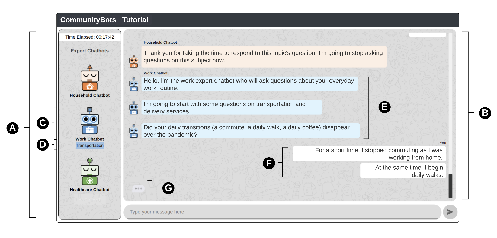

Welcome! I’m Zoe, a human-centric AI researcher passionate for the evolving relationship between humans and technology.
My work explores how people perceive, interact with, and shape AI-powered systems, bridging human-computer interaction and data-informed decision-making.
If you want to call me Zhiqiu, the pronunciation is like 🔊.
My work focuses on connecting people with transformative technologies like AI, exploring the evolving relationship between humans and intelligent systems. I believe that this dynamic interaction not only demands innovative solutions to enhance human lives but also calls for deep reflection on society and ourselves.
Two important aspects that I want to further investigate in my research: One is about developing ethical and human-centric AI; Another is about leveraging AI tools, such as large language models, to enhance decision-making and address real-world challenges.
My goal is to understand how people interact with technology — exploring their perceptions, preferences, and behaviors — while creating systems that respond to these needs and expectations, and having broader impact across various sectors and stakeholders.
I am passionate about exploring the interdisciplinary connections between technology, people, and society. My work spans a variety of projects, including conversational AI for social good, human-computer interaction, technology acceptance and user experience, big data analytics for transportation analytics, data-driven travel behavior analysis, and natural language processing for smart city management.
News
- 02-2025: My work “What If Designing a Gender-Neutral Voice For X” has been accepted for presentation at the Arts in Robotics session of the 2025 IEEE International Conference on Robotics and Automation (ICRA).
- 10-2024: Two of my works were accepted for presentation at the 2024 NeurIPS Creative AI. See you in Vancouver, Canada!
- 09-2024: I will be giving a talk at the University of Virginia about “AI and Human Perception: A Journey from Data-Driven Research to User-Centered Design.”
- 04-2024: I will participate in Helmholtz workshop “Career and Leadership” from April 23-25 in Schloss Buchenau, Germany.
- 04-2023: Our CommunityBots paper was published online in 2023 ACM SIGCHI CSCW. A Kudos showcase is also available.
- 03-2023: Our ZEV paper examining consumers’ preferences and willingness to pay for zero-emission vehicle was accepted for publication in the Journal of Transport Policy.
- 11-2022: Our paper about designing, developing, and evaluating a multi-agent chatbot platform for public input elicitation was accepted for the proceedings of 2023 ACM SIGCHI CSCW.
- 04-2022: Our Driverless shuttles paper was accepted for publication in the Journal of Public Transportation.
- 02-2022: Our Mapping instability paper investigating the effects of the pandemic was accepted to the Environments By Design: Health, Wellbeing And Place Conference 2022.
- 07-2021: I defended my PhD dissertation at University of Virginia.
- 05-2021: I was awarded the CDS Postdoctoral Fellowship in the Department of Computer Science at UMass Amherst.
Recent Research Highlight

CommunityBots: Creating and Evaluating A Multi-Agent Chatbot Platform for Public Input Elicitation
Zhiqiu Jiang, Mashrur Rashik, Kunjal Panchal, Mahmood Jasim, Ali Sarvghad, Pari Riahi, Erica DeWitt, Fey Thurber, Narges Mahyar
Our recent work was accepted to CSCW 2023. We designed, developed, and evaluated CommunityBots — a multi-agent chatbot platform where each chatbot handles a different domain individually to elicit public input. To manage conversation across multiple topics and chatbots, we proposed a novel Conversation and Topic Management (CTM) mechanism that handles topic-switching and chatbot-switching based on user responses and intentions. Our evaluation demonstrates that CommunityBots participants were significantly more engaged, provided higher-quality responses, and experienced fewer conversational interruptions while conversing with multiple chatbots in the same session.
You can find the paper here.